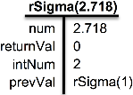
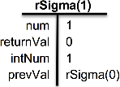
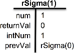
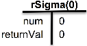
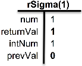
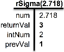

Recursion is a powerful technique but may be difficult to understand initially. Tracing recursive functions can be confusing unless we remember that each successive recursive call is a different context, with a completely new T-Diagram.
Let’s trace rSigma() when given 2.718:
function rSigma(num) {
var returnVal = 0;
if (num >= 1) {
var intNum = Math.trunc(num);
var prevVal = rSigma(intNum–1);
returnVal = prevVal + intNum;
}
return returnVal;
}
Upon entering, we set returnVal, enter an IF, set intNum and call rSigma. At this point, the eventual value of prevVal is unknown. All we know is that it will be set to the return value from rSigma(1), which has not yet returned. Once it does, we can continue onward in this diagram. Let’s now work through rSigma(1). This new function call will have a new T-diagram.

As above, upon entering rSigma(1) we set returnVal, test num, enter IF, set intNum and call rSigma(0). Note the T-diagrams:

We are now two levels deep into rSigma, but this should not cause concern. The only effect those calls have on our new rSigma call is the input: 0. Unlike previous calls, this one (as num is 0) does not enter the IF; instead returning 0, here:

On exiting rSigma(0), that T-diagram is destroyed; we return to previous rSigma(1) context. We update prevVal to 0 (return value from rSigma(0)) and continue immediately after the previous recursive call, setting returnVal to prevVal+intNum, which in our diagram is 0+1. Immediately before we return from rSigma(1), here are our diagrams:
Back at last in our original context, we now know the value of prevVal: 1. Substituting this into our diagram and continuing from immediately after the recursive call, we set returnVal to 1+2, and return final value 3, shown here:

Hopefully this sheds some light on how recursive code works!
Chapter 9 – Recursion
Recursive Fibonacci
Write rFib(num). Recursively compute and return numth Fibonacci value. As earlier, treat first two (num = 0, num = 1) Fibonacci vals as 0 and 1. Examples: rFib(2) = 1 (0+1); rFib(3) = 2 (1+1); rFib(4) = 3 (1+2); rFib(5) = 5 (2+3). rFib(3.65) = rFib(3) = 2, rFib(-2) = rFib(0) = 0.
Recursive “Tribonacci”
Write function rTrib(num) to mimic Fibonacci, adding previous three values instead of two. First three Tribonacci numbers are 0, 0, 1, so rTrib(3) = 1 (0+0+1); rTrib(4) = 2 (0+1+1); rTrib(5) = 4 (1+1+2); rTrib(6) = 7 (1+2+4). Handle negatives and non-integers appropriately and inexpensively.
Paging Dr. Ackermann
The Ackermann function is among the earliest examples of a computable but not primitive-recursive function. It grows rapidly, and hence can overflow the JavaScript stack frame even at very low values. This function accepts two non-negative integer values, num1 and num2, and follows these rules:
1) ackermann(0,num2) == num2+1;
2) ackermann(num1,0) == ackermann(num1-1,1) if num1 > 0 (otherwise see #1);
3) ackermann(num1,num2) == ackermann(num1-1,ackermann(num1,num2-1)).
Don’t be dismayed if a num1 value as low as 4 “blows your stack”. That’s the nature of this function!
Zibonacci
This function borrows ideas from the Fibonacci series, but the calculated results appear to zig and zag, hence the name. A so-called ‘Zibonacci’ series would be defined by the following rules:
1) Zib(0) == 1;
2) Zib(1) == 1;
3) Zib(2) == 2;
4) Zib(2n+1) == Zib(n)+Zib(n-1)+1, if n > 0 (i.e. odd values 3 and higher);
5) Zib(2n) == Zib(n)+Zib(n+1)+1, if n > 1 (i.e. even values 4 and higher).
Create the Zibonacci(num) function. What is Zibonacci(10)? Zibonacci(100)?
Second: For a given number that might be a Zibonacci result, find the largest index that maps to that result. bestZibNum(3186) == 2467, bestZibNum(3183) == null.
Chapter 9 – Recursion